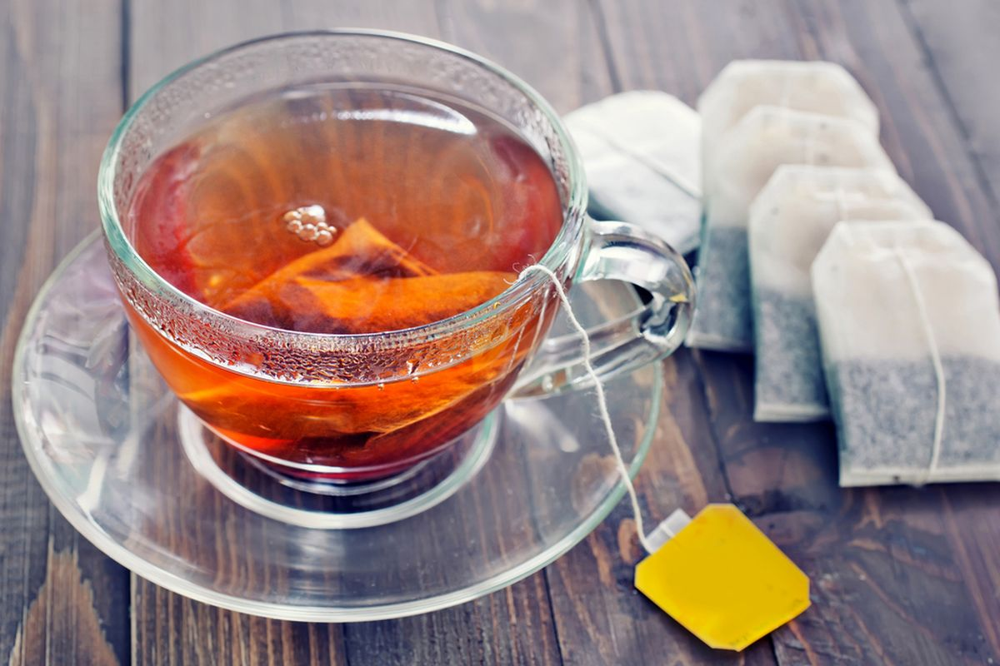

1.Siapkan bahan-bahan.
2.Panaskan air hingga mendidih.
3.Masukkan teh (kantong atau daun teh) dan gula pasir ke dalam cangkir.
4.Buka bungkus mie dan masukkan ke dalam panci
5.Tuangkan air panas ke dalam cangkir berisi teh dan gula.
6.Seduh (diamkan) selama 3 sampai 5 menit agar warna dan rasa teh keluar maksimal
7.duk perlahan hingga gula larut sepenuhnya, lalu teh siap dinikmati.
